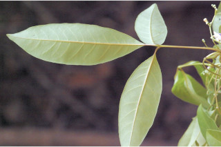
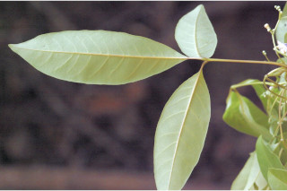
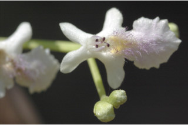
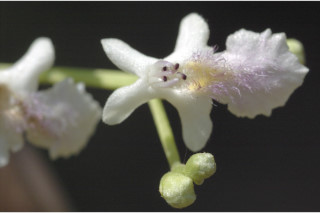

| Leaves : | Leaves compound , digitate or rarely trifoliate , opposite , decussate ; rachis pulvinate , planoconvex in cross section, minutely pubescent ; petiolule 0.5-1.5 cm long, canaliculate , glabrous ; leaflets 5 (rarely 3), lamina 7-11.5 x 2-3.5 cm, elliptic , apex acute to obtuse , base cuneate - attenuate , margin entire , chartaceous or thinly coriaceous , glaucous beneath, glabrous ; midrib canaliculate above; secondary_nerves 6-14 pairs; tertiary_nerves reticulo-percurrent , not prominent. |


 



 
